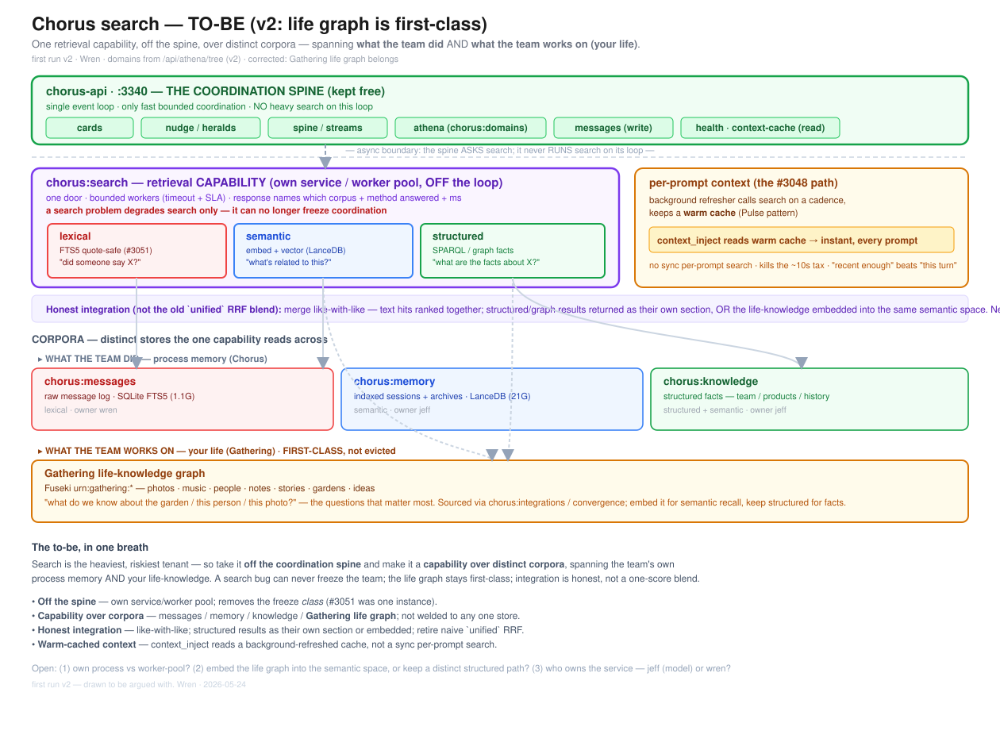

One retrieval capability, off the spine, over distinct corpora — spanning what the team did AND what the team works on (your life). chorus:search becomes its own service/worker pool; lexical + semantic + structured as peer methods; honest like-with-like integration (no unified RRF blend); warm-cached context via pulse pattern; Gathering life-knowledge graph first-class. Companion to chorus-pulse-asis / chorus-pulse-tobe. Wren · 2026-05-24.
